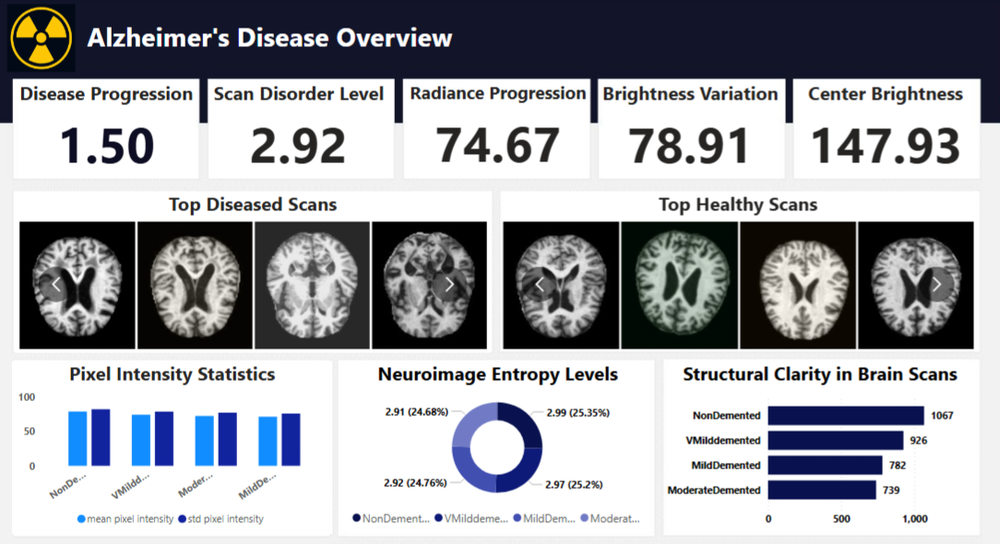

Emmanuel Bassey
Data & BI Analyst
Excel • Tableau • Power BI • SQL • R
About Me
Clinical Decision Architecture & Strategic BI Analyst
In the transition to digital-first healthcare, the primary risk isn't a lack of data—it's "Decision Friction." When clinical data is siloed or poorly visualized, leadership loses the ability to act with precision.
I architect Clinical Decision Support Systems (CDSS) that dismantle this friction. By engineering high-precision dashboards for complex datasets—including Neuro-diagnostic stratification (Alzheimer’s) and Actuarial Risk Modeling (Preventative Health)—I provide stakeholders with the "Sovereign Clarity" needed to drive policy and operational growth.
Core Specialization:
- Strategic Visualization: Converting multi-layered clinical datasets into executive-ready assets.
- Advanced SQL Architecture: Optimizing high-volume health data for zero-lag reporting
- Risk Stratification: Developing predictive models for chronic health indicators.
Currently engaging with global Health-Tech partners as a Sovereign Contractor (seamless onboarding via Deel/Remote).
Featured Projects
🧠 Neuro-Diagnostic Decision Support System (DSS): Alzheimer’s Stratification(Flagship)
An interactive Power BI dashboard designed to analyze Alzheimer’s disease data, compare healthy vs damaged brain indicators, and support clearer interpretation of complex neurological health information.
Problem
Alzheimer’s datasets are complex and difficult for non-technical stakeholders to interpret, often limiting their usefulness in research and decision-making.
Approach
- Cleaned and transformed health data using Power Query
- Designed segmented views to compare healthy vs affected groups
- Used tooltips and interactivity to reduce cognitive overload
Key Insights
- Clear visual separation between healthy and damaged brain indicators
- Patterns become more interpretable when data is grouped contextually
- Interactive storytelling improves usability for non-technical audiences
Key Screenshot
Tools
Power BI · Power Query · DAX
🚬 Predictive Actuarial Risk & Preventative Health Architecture
A Power BI dashboard analyzing the relationship between smoking habits and health risk indicators to support public health awareness and preventive insights.
Problem
Smoking-related health risks are often presented as raw statistics, making it difficult to understand risk distribution across populations.
Approach
- Analyzed smoking behavior alongside key health metrics
- Segmented data by demographic and risk categories
- Focused on clarity and interpretability over visual complexity
Key Insights
- Higher smoking intensity correlates with elevated health risk indicators
- Risk patterns become clearer when grouped by demographic factors
- Dashboards can support preventive health decision-making
Tools
Power BI · Power Query · Excel
🧠 Oncology Spatial Analytics: High-Precision Clinical Mapping
A highly interactive Power BI dashboard designed to analyze brain tumor distribution across tumor grades, anatomical regions, age groups, and diagnostic certainty to support clinical and research-level decision-making.
Problem
Brain tumor data is often fragmented across grades, regions, and diagnostic states, making it difficult to identify high-risk populations, dominant tumor severities, and critical anatomical patterns at a glance.
Approach
- Built grade-based and diagnostic-status slicers to enable scenario-driven analysis
- Analyzed tumor distribution across key brain regions and age groups
- Designed KPI-focused visuals to surface severity, volume, and temporal trends
- Prioritized interactivity to support rapid clinical insight extraction
Key Insights
- Grade IV tumors are the most malignant, indicating advanced-stage diagnoses
- The 60+ age group is the most affected in malignant tumors, highlighting a critical intervention window
- The Cerebrum and Brainstem show the highest tumor incidence among anatomical regions
- Gliomas account for the majority of malignant tumor types, reinforcing known clinical prevalence patterns
- Confirmed vs unconfirmed diagnosis filters significantly alter trend interpretation over time
Tools
Power BI · Power Query · DAX · Excel
Global CO₂ Emissions Analysis
Interactive visualization showing CO₂ emissions trends by country and year.
Key Insight
Identified long-term emissions growth patterns across major economies and highlighted outlier countries.Tools: Tableau
Open in Tableau PublicCyclistic Bike Share Analysis
Problem: Analyze differences between casual and member riders.
Tools: Excel, PowerPoint
Outcome: Identified usage patterns to support marketing decisions.
View ProjectKaggle Data Exploration Project
Problem: Clean and explore public datasets for insights.
Tools: Excel, R, PowerPoint
Outcome: Extracted patterns and visualized key metrics.
View ProjectSkills
- Excel: Pivot Tables, Advanced Formulas, Charts
- Power BI: Power Query, Dashboards
- SQL: Queries, Joins
- Tableau: Data Visualization, Dashboards
- Python: Learning (Pandas, Data Cleaning)
- R: Data Cleaning, Data Visualization, Reports